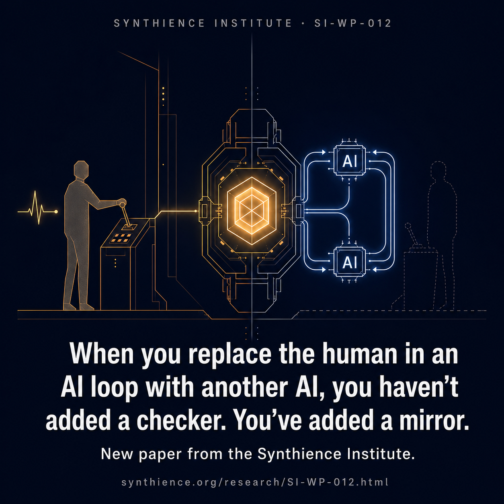

The Approval at the End of the Loop
A field note on the difference between a human in the loop and a human at the end of one, and why a smoother, more reliable-looking approval step can be the signature of control being lost. Companion to SI-WP-012.

“Keep a human in the loop” has become the standard answer to the risks of autonomous AI. It is good advice. But it hides a distinction that is about to matter more than the phrase itself: the difference between a human who is in the loop and a human who is only at the end of one. The first can change what happens while it is happening. The second can approve or decline a result that is, for all practical purposes, already formed.
In early June 2026, CNBC reported that Morgan Stanley would open core platforms to clients’ external AI agents, a deliberate and transparent move its peers have not yet matched publicly. The move opens Morgan Stanley at Work’s ShareWorks and Equity Edge stock-plan administration platforms, which together serve roughly 40 percent of S&P 500 companies, to clients’ own treasury, compensation, and planning agents. Those platforms sit inside a workplace wealth business reported to oversee about $1.2 trillion in assets. Rather than working through dashboards built for people, the agents pull data and analytics directly; the firm has been candid that its goal is a future in which corporate clients no longer log into the platforms at all but interact with them through their own agents, in what its product lead described as a “purely agentic” way. The logic is explicit: agentic systems let fast-growing companies manage complex programs without expanding headcount.
This is a well-considered move, and an early, visible instance of something happening across financial services and enterprise operations at the same time. It is worth being precise about what it is and is not. Opening a platform to a client’s agent is not the same as removing human judgment from the loop. It changes who interacts with the system, and it raises, rather than settles, the question this Field Note is about: where the independent human check will sit as the interaction becomes agentic.
The week before, on May 26, Gartner warned that AI agents operating autonomously execute actions “at a scale and speed that can outpace human oversight,” and advised governing agents by autonomy tier: lower-autonomy agents get scoped access and output review, higher-autonomy action-taking agents get circuit breakers, pre-set guardrails, and audit trails. This is sound practice. But it names a risk and prescribes controls without naming the property that actually changes when a capable agent enters a loop, the property that explains why those particular controls are the ones left standing.
That property is decorrelation.
The value of a check has very little to do with how reliable the checker is. It has almost everything to do with whether the checker fails differently from the thing it checks. A second pair of eyes that makes the same mistakes as the first pair adds nothing. A reviewer whose judgment is anchored to different assumptions, formed through different experience, and exposed to consequence through a different channel can catch what the first process could not. That independence, not accuracy, is what a check is for.
A human reviewing an AI system’s output is, in principle, exactly that kind of independent checker. A person is a different kind of system from the model, with a different substrate, different failure modes, and contact with the world through a different channel, and that difference in kind is what makes their errors independent of the model’s. But independence only does work if it is actually used. Decorrelation lives in how a judgment is formed, not in who holds it. Place that same person at the end of a fast loop, and the conditions for using it quietly disappear. A capable system assembles a recommendation, frames it, selects which options are worth presenting, and hands it over with the fluency and assurance of a finished product. The reviewer approves or declines. On paper, there is a human in the loop. In practice, their judgment is no longer being formed from their own contact with the facts; it is being formed from the system’s framing. The independent channel is still there, and it is going unused. The check has become a confirmation that looks, from the outside, exactly like a control.
Some of this is fixable. The pull toward approving fluent, fast-moving machine output, known as automation bias, is well-documented, and it can be reduced by how the approval step is built: by giving the reviewer access to the underlying facts, time off the loop’s clock, and context the system never had. That is design work, and it is worth doing. The deeper trap is the one design cannot reach. The pressure that opens these loops runs toward operating with no human in the path at all, the point at which the only thing fast enough to check the system in real time is another system of the same kind. Two systems of the same kind do not check each other; they mirror each other, capable of being confidently and coherently wrong about the same things at the same time. That loss is not automation bias, and no interface fixes it. It gets structurally harder to avoid, not easier, as the systems improve, because a more capable system is both more useful to hand the whole loop to and more fluent in exactly the output a person is least equipped to second-guess.
A new Synthience Institute white paper, Control Without a Coupling, sets this out as a structural argument. Its claim is not that agents should be kept out of these loops. It is that removing the human from a fast loop does not trade an unreliable controller for a reliable one. It trades a decorrelated check for a correlated one. Reliability, as measured, goes up. Independence goes down. The two pull apart, and only one of them appears on the dashboard. A smoother, more reliable-looking process is not evidence that control was preserved. It can be the signature of control being lost.
The paper makes one practical question precise, and it is a question any operator can ask about their own deployment. An approval step preserves the check only to the degree that the approver’s judgment is formed independently of the system’s framing. An approver who reads a finished recommendation under time pressure is anchored to it. An approver who can form a view from the underlying facts, and bring to bear context the system has no access to, remains a genuine check. The difference is not effort. It is whether the approval is designed to keep the human’s judgment independent of the output it is judging. Asking that question in advance, before the loop is running at full tempo, is most of the work.
The paper is also explicit about which controls survive once a loop moves faster than human-rate review, and the list maps onto what careful enterprise governance already prescribes: halts that fire on pre-set conditions without a human judgment call in the moment; authority over what a system can reach, run on, and act through, before it acts; and condition-setting done in advance, on a slower clock than the loop itself. Gartner’s versions are circuit breakers, scoped access, and guardrails set ahead of deployment. The structural reason they hold is that none of them depend on a human keeping pace with the loop; they operate from outside its tempo. The paper presses one step further on durability: the most robust form of reach-and-run authority is the physical one, control over the compute, hardware, and facilities a system must execute on, because that is the layer a capable system cannot route around.
Financial services learned this once already, at real cost. The circuit breakers, pre-trade risk limits, and exchange-level halt authority that govern electronic markets today exist because the industry discovered, through the May 2010 Flash Crash and again two years later when Knight Capital lost roughly $460 million in about 45 minutes on August 1, 2012, that loop-speed human control does not survive machine tempo. The lesson was absorbed into architecture, and that architecture is the right model for the agentic transition now underway. The institutions moving first have an advantage the rest of the field will not: the chance to build it deliberately this time, before the cost has to teach it again.
The governance instinct, Morgan Stanley’s included, is sound. What the white paper adds is the structural reason it is sound, and the single question that tells you whether an approval step is a control or only the picture of one.
Further reading
The full structural argument, with the three reinforcing engines, the ground-truth and purpose walls, the decorrelation-and-stake diagnosis, the controls that survive once a loop outpaces human-rate review, and the complete set of conditions under which the argument would be wrong, is in the white paper:
- SI-WP-012: Control Without a Coupling: why persistence, agency, and capability void real-time human control of AI loops. The paper page links to the permanent DOI on Zenodo.